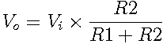

A voltage divider produces an input voltage that's a fraction of its input voltage, determined by the two resistors R1 and R2.
The output voltage is determined by .
Resistor dividers are often used to generate reference voltages or as level shifters; their high impedance means that attempting to draw significant current from them will cause the voltage to vary.